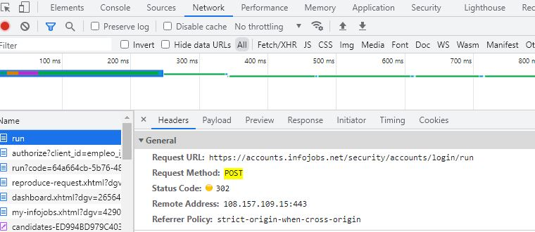

Desarrollador front-end: Se encarga de la experiencia del usuario,
es decir, el entorno cliente. Trabajará en tareas como la interfaz
de la web, apariencia de la misma o la experiencia del usuario.
Utilizará HTML, CSS, JavaScript, etc.
Desarrollador back-end: Se encarga de la parte del entorno
servidor. Al contrario que el desarrollador de front-end no se
encargará de la experiencia del usuario directamente, si no que
trabajará para que el servidor pueda recibir y transmitir datos al
cliente. Por ejemplo creará las interacciones con bases de datos
para que pueda funcionar la página web.
Utilizará lenguajes para servidor y bases de datos (PHP, Node.js,
SQL, etc).
Desarrollador full-stack: Este desarrollador creará la página web
desde cero y habrá de manejar las herramientas para el entorno
cliente y servidor. Básicamente realizará las tareas que realizan
los otros dos tipos de desarrollador. Sería un enfoque generalista
en vez de una especialización.
Utilizará todos los leguajes anteriores.
Framework CSS es un
conjunto de herramientas, hojas de estilos y buenas prácticas.
Generalmente se trata de una biblioteca de estilos genéricos y una
serie de utilidades. Facilitan la creación de estructuras complejas o
layouts y son especialmente recomendables para que la página web se
vea igual en los distintos navegadores.
Bootstrap es una
biblioteca multiplataforma o conjunto de herramientas de código
abierto para diseño de sitios y aplicaciones web. Contiene plantillas
de diseño con tipografía, formularios, botones, cuadros, menús de
navegación y otros elementos de diseño basado en HTML y CSS, así como
extensiones de JavaScript adicionales. A diferencia de muchos
frameworks web, solo se ocupa del desarrollo front-end. Fue creado por
Mark Otto y Jacob Thornton de Twitter en 2011 y la idea principal era
crear un framework para fomentar la consistencia entre las
herramientas internas. Es uno de los frameworks CSS más utilizados y
existe muchísima documentación para los desarrolladores.
Tailwind CSS es un
framework CSS de código abierto creado en 2017 por Adam Wathan y Steve
Schoger. Facilita la creación de estructuas y diseño restringiendo las
posibilidades o, mejor dicho, simplificando las infinitas opciones de
CSS mediante una biblioteca que además facilita el uso de media
queries y que funcione en los distintos navegadores. Pese a que
Tailwind CSS crea unas restricciones, estas se pueden personalizar.
Diferencias entre los dos frameworks:
Hay multitud de diferencias. Por un lado Tailwind CSS es más nuevo que
Bootstrap y, pese a que está teniendo muchísimo auge, la documentación
de Bootstrap es mucho mayor por lo que podemos encontrar soluciones a
errores o ideas por internet mucho más fácilmente. Por otro lado el
peso de Bootstrap descomprimido ocupa el doble de espacio que Tailwind
CSS. En cuando a plataformas, Bootstrap funcionará más fácilmente con
móviles al ser mobile-first, también es muy rápido a la hora de crear
prototipos. En cambio con Tailwind CSS es más rápido a la hora de usar
estilos, no hace falta estar creando clases ni tener que separar el
CSS y HTML en distintos archivos e ir moviéndote de uno a otro. Además
es más fácil de personalizar por lo que las páginas hechas con
Tailwind CSS pueden ser extramadamente distintas, en cambio las
páginas comerciales creadas con Bootstrap tienden a ser muy parecidas.
Web Content Accessibility Guidelines (WCAG)
es una guía de recomendaciones del World Wide Web Consortium (W3C) que
promueven la accesibilidad en la Web. Principalmente estas
recomendaciones están dirigidas a la accesibilidad para personas con
algún tipo de discapacidad pero también para la accesibilidad desde
dispositivos que están más limitados como es el caso de los móviles.
En 1999 se publicó la primera guía de recomendaciones y actualmente la
última versión publicada es WCAG 2.1 pero ya se está trabajando en
borradores de WCAG 2.2 y se ha anunciado la versión WCAG 3.0. Dentro
de la guía de recomendaciones se encuentran distintos criterios que
tienen asociado cada uno un nivel de conformidad, por ejemplo el
espaciado del texto tendría un nivel de conformidad AA. Existen 3
niveles de conformidad desde el nivel A, el mínimo, hasta el nivel AAA
que incluiría todos los criterios de la guía de recomendación y, por
tanto, el nivel de accesibilidad de esa Web sería mucho más alto.
Es importante validar en XHTML, CSS y WCAG 2.1 AAA para así comprobar
que nuestra página web va a poder ser visualizada correctamente por el
mayor número de personas y navegadores. En caso de que no superáramos
algún validador significaría que, o la estructura o alguna
característica del lenguaje se está utilizando incorrectamente y no
sería cargada en algunos navegadores o que no seguimos algún criterio
de accesibilidad y dificultaría la navegación y uso de la página para
algunas personas o dispositivos.
Un servidor web o
servidor HTTP es un conjunto de software y de hardware subyacente que
acepta peticiones mediante vía HTTP o HTTP seguro (HTTPS). Básicamente
funciona de la siguiente manera, en primer lugar un navegador web
inicia la comunicación mediante una petición a una página web u otro
recurso usando el protocolo de red HTTP y el servidor responde con
contenido o un mensaje de error (p.ej error 404).
HTTP o HyperText
Transfer Protocol es un protocolo de transferencia sobre el que se
basa la world wide web. Se utiliza como base para los intercambios de
datos que se realizan en la web y mantiene una estructura basada en el
modelo cliente-servidor y orientada a peticiones/transacciones. Como
hemos visto anteriormente, funciona de la siguiente manera: El
programa cliente, p.ej. el navegador de Google Chrome establece una
conexión y realiza la petición de datos de a programas servidores como
podría ser Apache. El servidor gestionará la petición y contestará
ofreciendo contenido a través de proxies que actúan como
intermediarios. El protocolo HTTP está apoyado sobre los servidores de
conexión y encapsulado de TCP/IP donde el protocolo TCP se encargará
de mantener la comunicación y garantizar que no se produzcan
errores.
Un ejemplo del método
HTTP GET podría ser
cuando buscamos en el formulario de búsqueda de artículos de
www.dia.es/compra-online. Al realizar la búsqueda podemos ver de
manera visibile en la barra de direcciones cómo se le da valor a una
variable de búsqueda text y de ahí se filtrarán los resultados.
Además con las developer tools de Google Chrome podemos ver que el método para la petición ha sido GET.
Un ejemplo del método HTTP POST podría ser cuando iniciamos sesión en un sitio, por ejemplo InfoJobs. Cuando introducimos el usuario y contraseña se manda el formulario con el método POST, por lo que no será posible ver los valores que hemos introducido en la barra de navegación. Desde las developer tools de Google Chrome podemos ver que el método usado para la petición ha sido POST.

Apache es un software de
servidor web HTTP de código abierto, modular y multiplataforma con
licencia Apache License 2.0. Su lanzamiento inicial fue en 1995 y
actualmente es desarrollado y mantenido por la Apache Software
Foundation. Apache es el servidor web más utilizado desde 1996 hasta
la actualidad. Al ser tan popular existe muchísima documentación por
lo que es fácil conseguir ayuda y soporte a nuestras
dudas/problemas.
XAMPP es un stack de
soluciones que se basa en una distribución de servidor web Apache que
contiene un gestor de bases de datos (MariaDB), un intérprete para PHP
y Perl. Se trata de una compilación de software libre publicada bajo
la licencia GPL. XAMPP es un acrónimo en el que la X se atribuye a que
es multiplataforma (crossplatform), la A es de apache, la M es de
MariaDB (antes MySQL) y las p son de PHP y Perl. XAMPP facilita mucho
el instalar y poder tener listo un servidor web con una base de datos
asociada.